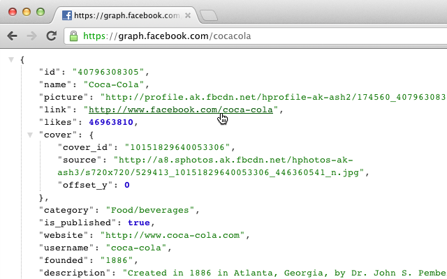

.erb files to .slim (requires erb2slim and html2slim gems) by recursing through all sub-directories:$ for f in /*.erb; do erb2slim $f ${f/.erb/.slim}; done
$ rm /*.erb
require 'colorize'
def print_table(table, with_header = true)
# Calculate widths
widths = []
table.each do |line|
line.each_with_index do |col, c|
widths[c] = (widths[c] && widths[c] > col.length) ? widths[c] : col.length
end
end
# Indent the last column left.
last = widths.pop()
format = widths.collect { |n| "%-#{n}s" }.join(" | ".black) + " #{'|'.black} %-#{last}s\n"
table.each_with_index do |line, i|
if i == 0 && with_header
printf(format.black, line)
else
printf(format, line)
end
end
end
Given a two-dimensional array, print_table pretty prints a table that looks a bit like this:
JSON Formatter enables syntax highlighting and collapsible trees with indent guides when working with raw JSON in your browser. One of my favorite features is that holding down cmd while collapsing a subtree collapses all of its siblings, too.
